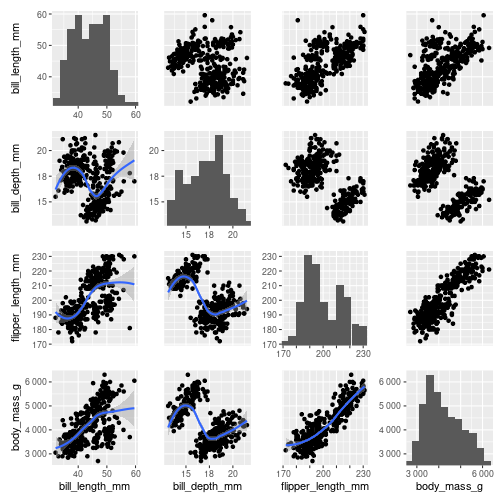

Plot a pairplot.
pairgrid.RdPlot a pairplot.
Usage
pairgrid(
data,
mapping = NULL,
map_lower,
map_diag,
map_upper,
common_xlim = global_xlim,
common_ylim = global_ylim,
diag_share_lim = TRUE,
common_scale = scales::label_number(accuracy = 1),
repeat_labels = FALSE,
repeat_text = FALSE,
check.overlap = TRUE,
diag_neighbour = NULL,
text_on_diag = T,
diag_share_ylim = NULL,
scale_diag_plot = FALSE,
...
)Arguments
- data
A data frame.
- map_lower
A function returning a ggplot2 object
- map_diag
Idem
- map_upper
Idem
- common_xlim
Accepts a function which returns a pair of limit. By default uses
global_xlim()- diag_share_lim
See
mapplot()for explanations.- common_scale
A function for applying a common scale across all subplots.
- repeat_text
Boolean indicating whether the text (digits) should be set on all subplots. If FALSE, only the left and bottom contigous plots have text set.
- diag_neighbour
A character vector c("t", "b", "l", "r"). If specified, the data from selected neighbour data is passed to map_diag, functions. When specified the subplots on top-left and bottom-right corner will always return their neighbours data.
- text_on_diag
Whether to apply text on diagonal. This argument applies only if one or more of the corners have plots.
- diag_share_ylim
Deprecated Users should use diag_share_lim instead
- scale_diag_plot
Whether to unit scale diag only pairplot. If the function passed to map_diag does not consider argument
unit_ysetting this option to TRUE might lead to scale limits issues.- ...
Arguments passed to
mapplot()- size
An integer representing the size of the square.
- only_x
Boolean indicating whether the method passed to map_diag has aesteatics no y axis, such as histogram
Details
Details
library(ggplot2)
library(pairplot)
penguins_url <- "https://raw.githubusercontent.com/allisonhorst/palmerpenguins/main/inst/extdata/penguins.csv"
columns <- c("bill_length_mm", "bill_depth_mm", "flipper_length_mm", "body_mass_g")
penguins <- read.csv(penguins_url)[columns]
penguins <- penguins[!apply(is.na(penguins), 1, any), ] # dropping NA
pairgrid(
penguins,
map_lower=pair_geom_smooth,
map_diag=pair_geom_histogram,
map_upper=pair_geom_point
)
#> Warning: Ignoring unknown parameters: unit_y
#> Ignoring unknown parameters: unit_y
#> Ignoring unknown parameters: unit_y
#> Ignoring unknown parameters: unit_y
#> Ignoring unknown parameters: unit_y
#> Ignoring unknown parameters: unit_y